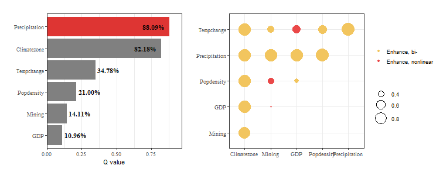

Load data and package
library(tidyverse)
library(gdverse)
data("ndvi")
head(ndvi)
## # A tibble: 6 × 7
## NDVIchange Climatezone Mining Tempchange Precipitation GDP Popdensity
## <dbl> <chr> <fct> <dbl> <dbl> <dbl> <dbl>
## 1 0.116 Bwk low 0.256 237. 12.6 1.45
## 2 0.0178 Bwk low 0.273 214. 2.69 0.801
## 3 0.138 Bsk low 0.302 449. 20.1 11.5
## 4 0.00439 Bwk low 0.383 213. 0 0.0462
## 5 0.00316 Bwk low 0.357 205. 0 0.0748
## 6 0.00838 Bwk low 0.338 201. 0 0.549Determine optimal discretization parameters
Climatezone and Mining is the discrete
category variables in the ndvi data, we need to discretize
others. We can use gd_bestunidisc() to discretize them
based on geodetector q-statistic.
tictoc::tic()
g = gd_bestunidisc(NDVIchange ~ .,
data = select(ndvi,-c(Climatezone,Mining)),
discnum = 3:15, cores = 6)
tictoc::toc()
## 2.78 sec elapsed
g
## $x
## [1] "GDP" "Popdensity" "Precipitation" "Tempchange"
##
## $k
## [1] 15 15 14 14
##
## $method
## [1] "quantile" "quantile" "natural" "equal"
##
## $disv
## # A tibble: 713 × 4
## GDP Popdensity Precipitation Tempchange
## <int> <int> <int> <int>
## 1 8 6 5 3
## 2 6 4 4 3
## 3 8 11 10 3
## 4 1 1 4 4
## 5 1 2 4 3
## 6 1 4 4 3
## 7 8 6 4 3
## 8 9 9 5 3
## 9 12 12 7 3
## 10 9 10 8 3
## # ℹ 703 more rows
new.ndvi = g$disv
new.ndvi
## # A tibble: 713 × 4
## GDP Popdensity Precipitation Tempchange
## <int> <int> <int> <int>
## 1 8 6 5 3
## 2 6 4 4 3
## 3 8 11 10 3
## 4 1 1 4 4
## 5 1 2 4 3
## 6 1 4 4 3
## 7 8 6 4 3
## 8 9 9 5 3
## 9 12 12 7 3
## 10 9 10 8 3
## # ℹ 703 more rowsThe new.ndvi is the discreted result of the optimal
discretization parameter based on the Q statistic of the geographical
detector (factor detector), we can combine it with other columns in
ndvi tibble now.
new.ndvi = bind_cols(select(ndvi,NDVIchange,Climatezone,Mining),new.ndvi)
new.ndvi
## # A tibble: 713 × 7
## NDVIchange Climatezone Mining GDP Popdensity Precipitation Tempchange
## <dbl> <chr> <fct> <int> <int> <int> <int>
## 1 0.116 Bwk low 8 6 5 3
## 2 0.0178 Bwk low 6 4 4 3
## 3 0.138 Bsk low 8 11 10 3
## 4 0.00439 Bwk low 1 1 4 4
## 5 0.00316 Bwk low 1 2 4 3
## 6 0.00838 Bwk low 1 4 4 3
## 7 0.0335 Bwk low 8 6 4 3
## 8 0.0387 Bwk low 9 9 5 3
## 9 0.0882 Bsk low 12 12 7 3
## 10 0.0690 Bsk low 9 10 8 3
## # ℹ 703 more rowsRun geodetector
Then, we can run geodetector model by gd() function.
gd(NDVIchange ~ .,data = new.ndvi,type = 'factor')
## *** Factor Detector
##
## | variable | Q-statistic | P-value |
## |:-------------:|:-----------:|:--------:|
## | Precipitation | 0.8809405 | 9.18e-10 |
## | Climatezone | 0.8218335 | 7.34e-10 |
## | Tempchange | 0.3478433 | 2.41e-10 |
## | Popdensity | 0.2100134 | 1.61e-10 |
## | Mining | 0.1411154 | 6.73e-10 |
## | GDP | 0.1096213 | 4.18e-10 |
gd(NDVIchange ~ .,data = new.ndvi,type = 'interaction')
## *** Interaction Detector
##
## | Interactive variable | Interaction |
## |:---------------------------:|:------------------:|
## | Climatezone ∩ Mining | Enhance, bi- |
## | Climatezone ∩ GDP | Enhance, bi- |
## | Climatezone ∩ Popdensity | Enhance, bi- |
## | Climatezone ∩ Precipitation | Enhance, bi- |
## | Climatezone ∩ Tempchange | Enhance, bi- |
## | Mining ∩ GDP | Enhance, nonlinear |
## | Mining ∩ Popdensity | Enhance, nonlinear |
## | Mining ∩ Precipitation | Enhance, bi- |
## | Mining ∩ Tempchange | Enhance, bi- |
## | GDP ∩ Popdensity | Enhance, bi- |
## | GDP ∩ Precipitation | Enhance, bi- |
## | GDP ∩ Tempchange | Enhance, nonlinear |
## | Popdensity ∩ Precipitation | Enhance, bi- |
## | Popdensity ∩ Tempchange | Enhance, bi- |
## | Precipitation ∩ Tempchange | Enhance, bi- |You can also use opgd() in one time to get result
above.
ndvi_opgd = opgd(NDVIchange ~ ., data = ndvi, discnum = 3:15,
discvar = names(select(ndvi,-c(NDVIchange,Climatezone,Mining))),
cores = 6, type = c('factor','interaction'))
ndvi_opgd
## OPGD Model
## *** Factor Detector
##
## | variable | Q-statistic | P-value |
## |:-------------:|:-----------:|:--------:|
## | Precipitation | 0.8809405 | 9.18e-10 |
## | Climatezone | 0.8218335 | 7.34e-10 |
## | Tempchange | 0.3478433 | 2.41e-10 |
## | Popdensity | 0.2100134 | 1.61e-10 |
## | Mining | 0.1411154 | 6.73e-10 |
## | GDP | 0.1096213 | 4.18e-10 |
##
## *** Interaction Detector
##
## | Interactive variable | Interaction |
## |:---------------------------:|:------------------:|
## | Climatezone ∩ Mining | Enhance, bi- |
## | Climatezone ∩ GDP | Enhance, bi- |
## | Climatezone ∩ Popdensity | Enhance, bi- |
## | Climatezone ∩ Precipitation | Enhance, bi- |
## | Climatezone ∩ Tempchange | Enhance, bi- |
## | Mining ∩ GDP | Enhance, nonlinear |
## | Mining ∩ Popdensity | Enhance, nonlinear |
## | Mining ∩ Precipitation | Enhance, bi- |
## | Mining ∩ Tempchange | Enhance, bi- |
## | GDP ∩ Popdensity | Enhance, bi- |
## | GDP ∩ Precipitation | Enhance, bi- |
## | GDP ∩ Tempchange | Enhance, nonlinear |
## | Popdensity ∩ Precipitation | Enhance, bi- |
## | Popdensity ∩ Tempchange | Enhance, bi- |
## | Precipitation ∩ Tempchange | Enhance, bi- |You can use plot() to visualize the result.
plot(ndvi_opgd)
Use $opt_param to get the optimal discretization
parameter in OPGD model:
ndvi_opgd$opt_param
## # A tibble: 4 × 3
## varibale discnum method
## <chr> <int> <chr>
## 1 GDP 15 quantile
## 2 Popdensity 15 quantile
## 3 Precipitation 14 natural
## 4 Tempchange 14 equal